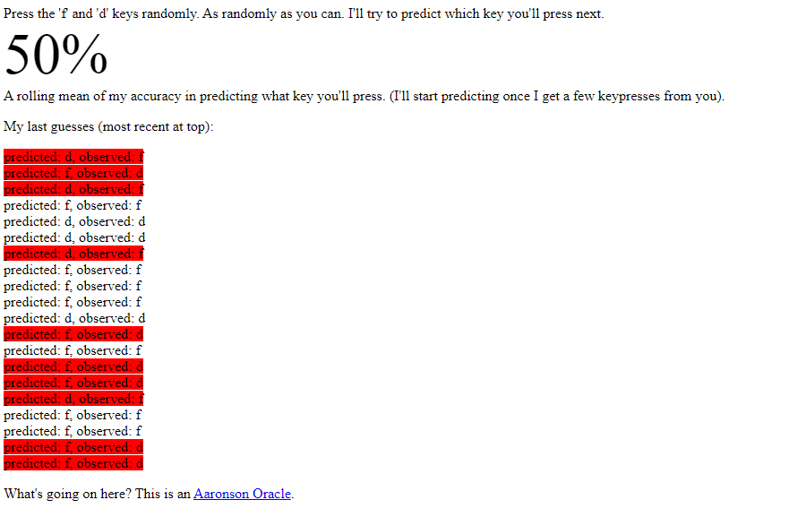

Free Will
Table of Contents
The "Free Will" Test
In a class I taught at Berkeley, I did an experiment where I wrote a simple little program that would let people type either “f” or “d” and would predict which key they were going to push next. It’s actually very easy to write a program that will make the right prediction about 70% of the time. Most people don’t really know how to type randomly. They’ll have too many alternations and so on. There will be all sorts of patterns, so you just have to build some sort of probabilistic model. Even a very crude one will do well. I couldn’t even beat my own program, knowing exactly how it worked. I challenged people to try this and the program was getting between 70% and 80% prediction rates. Then, we found one student that the program predicted exactly 50% of the time. We asked him what his secret was and he responded that he “just used his free will.”
— Scott Aaronson, Quantum Computing Since Democritus
As a general numbers dork and competitive fighting game player, the paragraph above has stuck in my mind ever since I read it for the first time – "just use your free will" has become a bit of an in-joke among close friends of mine as a result.
I've always thought I would be pretty good at this compared to the baseline; a combination of my love for games with mixups where players have to deal with weighted coin flips, and my general completely baseless belief that I am a "truly alive" person, and "totally not an NPC"1.
I certainly agree that people are bad at being random – I have won many tournament SSBM sets beating players who picked the same couple of options over and over. However, I wanted to prove that I was different, that years of gnashing my teeth in tournaments has produced a truly reliable random number generator in my mind.
What I ended up finding out was that I performed better than the reported average reported in the book (hooray!) but that I still had some pretty clear flaws in my random behaviors (oh no!). I do some thinking about how to generate random processes reliably, and test those also.
Existing Implementations
This was a pretty popular viral meme at one point, so I ended up finding an existing repository implementing it. You can find it here, and the code describing it here. However, I got the sense that something was a bit off about this implementation, as I immediately crushed it:

Something about this did not feel right. So, after digging into it, I found out where the flaw was. Per their github repository, they are implementing the following:
All the basic program did was to examine all 32 possible 5-grams (sequences of five f's and d's), and see which 5-grams were more likely to be followed by f or by d in the user's previous keypresses, and then use that to generate a prediction based on the most recent 5-gram. There might have been various enhancements on top of that – e.g., if you're not taking enough data for 5-grams to be useful, then you can also look at 4-grams and 3-grams, and you can also "seed" the predictor with 5-gram data from the previous users (hoping that the next user will be pretty similar).
This repo implements the no-enhancements version.
Armed with this knowledge, I dug into their code and found the following
So, if you have a 5-gram which has never been seen before, it will always predict 'f'. If you have a tie between letters, it will always predict 'd'. This seems like a huge flaw! Especially if I can see the stream of letters, can notice the abundance of 'f' predictions, and adjust accordingly. It's possible this will work as intended after you do several hundred keypresses, but in the short-term most users who type 80-130 keys would probably erroneously get "free will" results. So I went about coding up my own implementation where these ties are broken randomly instead.
My Implementation
The code here is, as Aaronson says, very simple. The basic implementation is minimally different from elsehow's repository, but I added the random choice part, let you control how big you wanted the n-grams. The random choice means this is no longer deterministic, so I run it a few times to get consistent measurements.
import random
import itertools
import matplotlib.pyplot as plt
class Predictor:
def __init__(self, n):
self.n = n
self.ngrams = {}
self.correct_predictions = 0
self.total_predictions = 0
all_combinations = itertools.product(['f', 'd'], repeat=n)
for combination in all_combinations:
self.ngrams[''.join(combination)] = {'f': 0, 'd': 0}
def predict(self, sequence):
correct_predictions = 0
total_predictions = 0
history = sequence[:self.n]
for next_character in sequence[self.n:]:
prediction = self._make_prediction(history)
history = self._update_history(history, next_character)
total_predictions += 1
if prediction == next_character:
correct_predictions += 1
self.correct_predictions = correct_predictions
self.total_predictions = total_predictions
return correct_predictions / total_predictions if total_predictions != 0 else 0
def _make_prediction(self, history):
prediction = self.ngrams[history]
if prediction['f'] > prediction['d']:
return 'f'
elif prediction['d'] > prediction['f']:
return 'd'
else:
return random.choice(['f', 'd'])
def _update_history(self, history, next_character):
self.ngrams[history][next_character] += 1
history = history[1:] + next_character
return history
def plot_predictions(sequence, n=3, runs=100):
percentages = []
for i in range(len(sequence)):
avg_percentage = 0
for _ in range(runs): # (break ties random)
this_predictor = Predictor(n)
this_predictor.predict(sequence[:i])
avg_percentage += this_predictor.correct_predictions / this_predictor.total_predictions if this_predictor.total_predictions != 0 else 0
avg_percentage /= runs
percentages.append(avg_percentage)
Doing intentionally patterned keypresses as a test, it's clear this thing does quickly pick up on patterns even at n=3.
Below is my attempt at it, using only general intuition and no heuristics or counting. I wanted this to feel like I needed to make a snap judgment (e.g. in a fighting game) where I couldn't sit and generate a random number through some complicated process. I typed 100 keys and somehow landed on an exactly 50/50 split, which I think is interesting!
sequence = 'ffdffdddfffddffddffdddffddfffdfdddffdfddfddfdfddffddfdfffdfddffdffddffddfdffdddddffdfdfffdfddffdddff'
print(sequence.count('f'))
print(sequence.count('d'))
# pretty good / lucky distribution for no heuristics
for i in range(3,6):
predictor = plot_predictions(sequence, n=i)
for fd in predictor.ngrams:
print(fd, predictor.ngrams[fd])
I got a result I considered pretty gratifying: it seems like I'm better at this (~60%) than the participants referred to by Aaronson, which made me feel all warm and fuzzy inside. However, I noticed that there were some very obvious disparities in some of my picks, even in easy-to-understand 3-grams.
- fff {'f': 0, 'd': 4}
- ffd {'f': 7, 'd': 10}
- fdf {'f': 5, 'd': 6}
- fdd {'f': 11, 'd': 5}
- dff {'f': 4, 'd': 12}
- dfd {'f': 4, 'd': 6}
- ddf {'f': 11, 'd': 4}
- ddd {'f': 5, 'd': 2}
This was cool: it exposed a blindspot in some of my decisions (especially near the edges).
Simple Heuristics for Being More Random
If you had time to think about it, could you beat this test? I think you could – and I will present the only use I've ever heard of for memorizing digits of pi: using digits of an irrational number as a random number generator. Here are 100 digits of pi, and I generate a string for this task by taking 'd' for evens and 'f' for odds.
print("generating using 100 digits of pi")
# Generate sequence using digits of pi
pi = '3141592653589793238462643383279502884197169399375105820974944592307816406286208998628034825342117067'
sequence = ''.join(['d' if int(x)%2==0 else 'f' for x in pi])
assert sequence == 'ffdfffddfffdffffdfddddddffdfdfffdddddffffdffffffffdfdddffdfddffdfdfdfddddddddddffdddddfdddffddfffddf'
print(sequence.count('f'))
print(sequence.count('d'))
for i in range(3,6):
predictor = plot_predictions(sequence, n=i)
for fd in predictor.ngrams:
print(fd, predictor.ngrams[fd])

It's striking how much better this performs than my results. Well, not really. It's a random sequence, and my sequence was not random, as much as I would have liked to feel that way.
It should be possible to get random arbitrarily weighted coin flips this way too: if you want a 60-40 split, just take 0-5 as 'd' and 6-9 as 'f'. If you want a 65-35 split, take 0-5 as 'd', take 7-9 as 'f', and take 6 as "check the next digit, 0-4 as 'f', 5-9 as 'd'". I'm certain this will someday be useful for someone. At the very least, some of you who happen to have pi already memorized can use this as a fun party trick to do something with that knowledge.
Thoughts on "Feeling Random"
The pi-generated string made me feel extremely uneasy. It severely outperformed me despite feeling "obviously more patterned". There were many stretches where it generated the same value many times in a row, and I felt worried that my idea of using irrational number digits as a random number generator was actually somehow wrong because of some number theory patterning result I had never heard of before.
For instance: consider the first few digits: 'ffdfffddfffdffffdfdddddd'. This just seems obviously ridiculous! If somebody played mixups like this against me I would probably identify them as "easy to read". The fact that the results are so much better than mine really highlights the point of this study: that "random feeling" and "random" are simply not the same concept.
Thinking about this highlights some interesting discussion on whether different scenarios where humans are incentivized to "be random" are, in fact, incentivizing "random feeling" or "truly random" processes. That is to say, I think I felt a lot of pressure to make sure that the distribution of 'f' and 'd' was very close to 50% at all times, whereas the random sequence very clearly did not have such pressure.


I wonder which situations would reward vs punish this behavior – if you wanted to be confident that you were being "pretty random", you would feel pressured to make sure you ended up around 50/50, and if you didn't know how many flips you were going to get, it perhaps feels stress-inducing to stray from that. There's a sort of "gravity" pulling you back to 50% when you deviate, compared to a truly random process which "doesn't care" and simply ends up there in the long term. If anyone has thoughts on this I would love to hear them! I'd love to hear from, for example, poker players on how random choices in that game "feel" compared to "are".
Closing Thoughts
I came away from this test feeling affirmed that I possess at least some small quantity of "free will". At the very least, I came away from this thinking that I can make roughly 100 decisions that are relatively random, and that my fighting game training was not for naught. It's possible that if I did 600 keypresses, that this model would slowly build an advantage over me. However, I simply do not have the patience to carefully make 600 keypresses. If I can get a good result in 100, that's good enough for me.
I did do some thinking about how such a model could be truly "beaten", i.e. if you knew a priori that your opponent was keeping track of your 3-grams, you could keep a 50-50 distribution for all the ties, and you can guess the opposite value whenever you end up with an unbalanced one, since you know what your opponent will pick. I don't have any sense to how big of an edge you would get with this sort of advantage into your opponent's decision-making process, but it's a useful showcase about how you should keep these sorts of processes close to your chest when you do use them.
Doing such a modification to the code above seems like it should be straightforwards. At least, it would be, to those who can use their free will to do so.
Footnotes:
At the very least – I'd like to be a cool NPC. You know, a real memorable one. That feels achievable, at least.